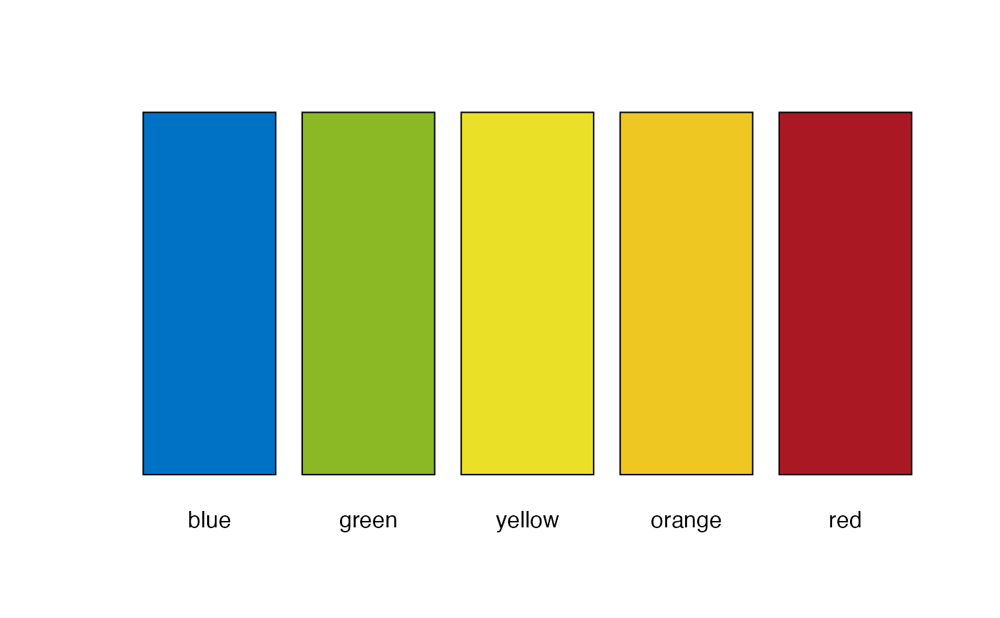

Get Official BWB Colours
get_bwb_colours( full_info = FALSE, simple = TRUE, conditions = NULL, six = FALSE )
| full_info | if |
|---|---|
| simple | if |
| conditions | optional. Vector of (four) condition names (best to worst)
to be used as the names of the returned vector of (four) colour codes.
|
| six | if |
# Get a colour vector get_bwb_colours()#> blue green yellow orange red #> "#0072C6" "#8AB925" "#E9E027" "#EEC722" "#AA1923"# Check the decimal numbers by setting full_info to TRUE get_bwb_colours(full_info = TRUE)#> approx_name red green blue value name #> 1 lochmara 0 114 198 #0072C6 blue #> 2 atlantis 138 185 37 #8AB925 green #> 4 sunflower 233 224 39 #E9E027 yellow #> 5 golden_dream 238 199 34 #EEC722 orange #> 7 tamarillo 170 25 35 #AA1923 red# Get six colours get_bwb_colours(six = TRUE)#> 0 1 2 3 4 5 #> "#8AB925" "#B2C967" "#E9E027" "#EEC722" "#E23642" "#AA1923"